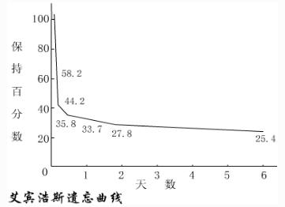

->"同步背单词"是一款根据艾宾浩斯遗忘曲线而开发的背单词软件
->根据艾宾浩斯遗忘曲线,得到背诵单词的复习点:
->这三个记忆周期属于短期记忆的范畴,下面是几个比较重要的周期。
->以上的8个周期应用于背词法，作为一个大的背词的循环的8个复习点，可以最大程度的提高背单词的效率.
本软件自动记录用户记住单词的时间，经过一个记忆周期之后，本软件就会重新显示这个单词，帮助用户复习单词。
->德国有一位著名的心理学家名叫艾宾浩斯(Hermann Ebbinghaus，1850-1909)，他在1885年发表了他的实验报告：
"人们接触到的信息在经过人的学习后，便成为了人的短时的记忆，但是如果不经过及时的复习，这些记住过的东西就会遗忘。"
并且艾宾浩斯做了个著名的实验。他选用了一些根本没有意义的音节，也就是那些不能拼出单词来的众多字母的组合，比如asww，cfhhj，ijikmb，rfyjbc等等。
他经过对自己的测试，得到了一些数据 ：
->然后，艾宾浩斯又根据了这些点描绘出了一条曲线，这就是非常有名的揭示遗忘规律的艾宾浩斯遗忘曲线:
->这条曲线告诉人们在学习中的遗忘是有规律的，遗忘的进程很快，并且先快后慢。 观察曲线，你会发现,学得的知识在1天后，如不抓紧复习，就只剩下原来的25%。 随着时间的推移，遗忘的速度减慢，遗忘的数量也就减少。